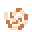
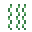

☰
Dragon Amulet wiki
Beta 0.9.48
Dragon Amulet
Main page
Browse
Guides
40
Classes
6
Bosses
8
Monsters
25
Animals
15
Weapons
63
Tools
37
Armor
8
Accessories
30
Charms
13
Runes
5
Potions and elixirs
12
Food
74
Seeds and farming
4
Fish and treasure
18
Materials
25
Bombs
5
Boats
5
War machines
3
Blocks
184
Other items
26
Crafting
5
Buildings
10
Shops and villagers
8
Play
Play the game
Mac and Windows app
Main page
Fish and treasure
18 pages.
Ancient coin
Black pearl
Conch shell
Coral
Golden fish
Jewel box
Kraken ink

Nautilus shell
Old boot
Old compass
Pearl
Rusty chain
Sea glass
Sealed chest

Seaweed
Soggy paper
Sunken crown
Tin can
On this page
✕
▲
◀
Back
⌂
Home
⌕
Search
☰
Contents
▶
Play